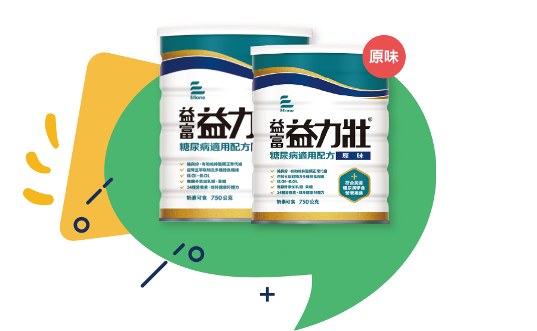

益力壯糖尿病適用配方
醫學證實８週有效維持醣類正常代謝


醫學證實８週有效維持醣類正常代謝
透過專利萃取技術去除有害物質
促進腸胃蠕動，使排便順暢
延長胃排空時間，增加飽足感
原味:35
幫助延缓澱粉的消化
透過專利萃取技術去除有害物質，同時保留澱粉酶抑制劑的效果
透過專利萃取技術去除有害物質，同時保留澱粉酶抑制劑的效果
吡啶甲酸鉻吸收率較高，鉻有助於醣類正常代謝
濃縮乳清蛋白、分離黃豆蛋白，為高生理價的優質蛋白質，其PDCAAS均為1，好消化吸收，幫助增強體力，且提供完整必需胺墓酸
| 蛋白質來源 | 蛋白質消化率分數 |
|---|---|
| 乳清蛋白 | 1.00 |
| 大豆蛋白 | 1.00 |
| 牛奶 | 1.00 |
| 酪蛋白 | 1.00 |
| 牛肉 | 0.92 |
| 花生 | 0.52 |
現行常見的鉻型態中，以吡啶甲酸鉻吸收率較高，且高於三氯化鉻16倍*，鉻有助於醣類正常代謝